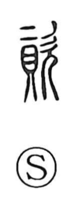

資

Kun: | On: shi
resources ・ capital ・ assets ・ materials ・ disposition
Explanation
A phono‑semantic compound, 資 pairs 貝, the shell that signified valuables and money, with 次 as the phonetic element indicating the reading shi. The Shuowen already glosses it as 貨, “money.” From that core it came to denote property—both goods and cash—the capital that underpins economic activity, hence compounds like 資本 for enterprise funds. By extension to people, it names one’s innate endowment or inborn qualities, as in 資質, a person’s natural disposition.